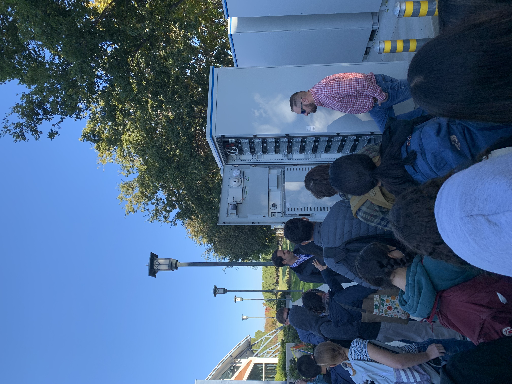

Resume PDF Link
Introduction
During my time in DEDA's engineering program, I had the opportunity to meet numerous industry professionals through field trips and guest speaker presentations. Some were professionals in the industry, while others were Dublin High School alumni, sharing their journey from high school to college. The presentations were very inspirational, because they made my future seem more reachable and realistic. I'm grateful for their time spent with us and for the helpful advice that was offered.
DEDA Mentorship Program
In my junior year, I had the great honor of participating in the mentorship program, where students were matched with a mentor that they chose based on provided portfolios. I really resonated with how my mentor talked about their immigrant experience, and I was lucky to find out that my mentor group (Samuel Lee and Jenny Wang) went to two of my colleges of interest — Cal Poly and UCLA. During my time in the program, I attended weekly meetings with DEDA teachers to prepare for monthly meetings with the mentors. Preparatory material included college research, self "marketing" techniques such as elevator pitches, and professional preparation such as creating a LinkedIn page. During monthly meetings, I got to speak with my mentors, and discuss the material we had prepared for them. Most notably, I found it useful to look at their past resumes, which showed their growth in their professions. Overall, the program helped me realize my strengths for a better professional confidence, as well as work on my weaknesses to prepare me for my future, soon-to-be present.
Field Trips
Google Headquarters, February 28, 2020
I have been very fortunate to take a spot in a field trip to the Google Headquarters in Mountain View, California. We met with TV Show host Kari Byron, and watched the filming of a Google Talk, where Kari discussed her ideas, as well as information about her old shows and a preview for her new show. While Byron isn't necessarily a computer scientist or software developer, her career path is truly inspiring. It took Byron a long time to get where she is today, but it wouldn't have been possible without her hard work and ambition. She is very open to experimenting and trying new things, and does what she loves for a living, which I want for my future self as well.
Junior Achievement Oracle Job Shadow - October 7, 2020
This field trip consisted of an introduction from the Vice President of Software Engineering at Oracle, followed by breakout rooms with Oracle professionals who talked about their path to their position as well as the daily tasks and duties of their job. It was fascinating to have so many people in the industry in one call, and I was grateful for the advice that they gave. Many gave tips on mindset, personal growth, as well as an interactive conversation about what to do during an interview evaluation. I found their advice incredibly helpful, and I'm very grateful to have had the opportunity to listen to them explain what I will have to be ready for in the future.
SheLeads - Oct 28, 2021
I was greatly honored to attend the SheLeads summit in junior year, in which many women already situated in the workforce took the time to present to and chat with eager highschool students about their future. Although the summit was online due to COVID-19, I still found it very eye-opening and time passed by so quickly. For a more personal experience, the summit was partially divided into rotating workshops, in which mentors and mentees had the time to chat in small groups. During the breakout room sections, questions were asked about the specific path of the mentors and how they got to the place they were at today. For me, it was strangely comforting to hear that these professionals were regular girls in high school, with personal interests and aspirations just like me.
Junior Achievement Entrepreneurship Summit - November 8, 2021
I found the JA Entrepreneurship Summit to be particularly interesting, because I already had experience working with small businesses for the DEDA Entrepreneurship Project in 2020, following the Covid-19 lockdown. In that project, I did research on how small businesses reacted to the sudden drop in in-person sales, which many of them relied on for their main source of revenue. In the JA summit, my knowledge in this area was deepened, as many professionals who started their own tech businesses came in to share their stories and insight. I learned so much about the risks that they took, obstacles they overcame, and the milestones they achieved to get where they are today.
City of Dublin Environmental Sustainability Tour - November 14, 2022
I was thrilled to get a spot for the City of Dublin field trip, because it was actually my first in-person field trip since 2020. I was also very excited to see what the city I’ve lived in for the past 11 years was doing about environmental sustainability and plans for turning the city more green. The field trip consisted of various locations and guest speakers, including the Dublin Library, and the Wave park at Emerald Glen. There, we discussed Dublin’s plans for a green future, including public policy actions that were already being worked on, such as Plan 2030, in which Dublin was striving for renewable and carbon-free electricity. It was so interesting to connect concepts that I had learned in AP Environmental science, as well as previous science classes, to the terms and ideas covered during the field trip.

Guest Speakers
Gagan Thapar - October 21, 2020
I was very fortunate to attend the guest speaker talk of Gagan Thapar, who is a student at CalPoly and is currently studying Aerospace Engineering. When Thapar talked about being a student from the same school as me, having the same teacher, describing the same projects that I have done, his presentation suddenly felt more personal. His achievements suddenly felt more possible, and inspired me to look into unique professions, since he was able to with very similar resources. Furthermore, I had never heard a talk from an aerospace engineer, so his telling of this unique college experience widened my view of what education could be like after high school. More specifically, he talked about interesting projects in the CalPoly CubeSat Lab, such as the CPCL: X Cube mission, which was used by NASA and the Universities Space Research Association. Thapar concluded his presentation by giving high school and college advice, including pacing and mindset tips.
Joseph Fortuno - October 30, 2020
I was very grateful to be able to hear Joseph Fortuno speak for Junior Achievement, and he gave a presentation about his steps from success — from high school, all the way to present day. I have a lot of respect for Fortuno for including such personal details in his presentation. He described his low points very vividly, such as tough living conditions and discouraging teachers. However, he was able to pull himself together and push forward, attending college, exploring careers, internships, and other extracurriculars. After graduating college at the top of his class, he worked with Junior Achievement and his own nonprofit, and now works as a production assistant at the Industrial Light & Magic section of Lucasfilms, which was his dream growing up. Overall, this presentation was incredibly detailed and inspiring, and pushed me to do my own career research based on my own interests, rather than expectations of those around me.
Kenny Lau - February 4, 2021
Kenny Lau was another fellow DHS Alumnus that I was lucky to listen to during his presentation about his educational path. Lau had also been in the Engineering Academy, and it was almost surreal to hear a person with a path so close to what I had imagined for myself at the time. He had taken courses such as POE and computer science, and had been an FMP mentor. Lau was a person I realized I looked up to during his talk, because he had been on the design team for the Special Olympics, participated in hackathons, and was accepted to Cal Poly. I found his talk to be very insightful as well, since he talked about switching majors and gave advice for both high school and college. The most memorable piece of advice that he said was “school is what you make of it”, because looking back, I completely agree. Opportunities for personal enrichment are everywhere, it’s up to you to grab them in time and make use for yourself and your future career.
Carla Colindres - December 3, 2020
I found Carla Colindres’ talk to be very unique because she had a career path unlike all the other guest speakers I’ve attended. Instead of studying in the Bay Area, Colindres finished her undergraduate degree in Guatemala, and then completed her MBA at Berkeley. I was very interested in the concepts she mentioned when talking about her research, such as app design and development, including examples of Instagram and its filters. I loved hearing Colindres talk about how she discovered her passion — she worked on projects that helped people in poverty, traveled for the purpose of seeing how different people live and what resources they have, and loved to see how much impact she could have on their lives. Like Colindres, I hope to find an inspiring passion to work towards in my professional career.
Andrea Madotto - March 10, 2021
Madotto’s talk was very different from the rest in the fact that it was specialized to machine learning, and he talked about the history of AI, rather than his path to the workforce. As a beginner computer scientist and an aspiring designer, machine learning and robots in general were definitely a step out of my comfort zone and outside of my expectations for my future career. Nevertheless, I greatly enjoyed Madotto’s presentation and the questions he posed, specifically when he talked about the ethics of machine learning. AI, a concept getting more and more widespread by the day, is also being greatly criticized for its potential harms to society. Madotto warns that we have reached the specific point at which we need to estimate the possible damage that can be done and the steps we need to take to always stay in control. While the presentation felt like a gloomy warning to society, it was very eye-opening, since we’re more and more likely to end up working with AI in the future.